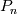
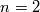
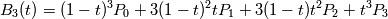

Bézier curves¶
The Bézier curve is a parametric curve commonly used in graphics applications as they are smooth and scalable. They were first developed in 1959 by Paul de Casteljau, and were widely publicised by Pierre Bézier. The Bézier curve of degree is defined as
where the polynomials
are known as the Bernstein basis polynomials, and the points are the control points. The curve begins at and ends at .
The derivative of a Bézier curve is given by
where , i.e., the derivative is itself a Bézier
curve of degree  .
.
SVG (and thus Inkscape) uses both quadratic () and cubic () Bézier curves. Hence we need to be able to calculate the bounding box of a Bézier curve.
Loose bounds¶
The convex hull of the control points contains the entire curve. Hence, a bounding box which encompasses all the control points is guaranteed to encompass the curve. However, unless all the control points are colinear (i.e., the curve actually describes a straight line), this will not be a tight bounding box.
Tight bounds¶
The curve is guaranteed to pass through the start and end points ( and ) so the initial bounding box is one that encompasses these two points. We then need to extend it so it includes the maxima and minima of the curve. To find the locations of these extrema, we set the derivative of the curve to zero and solve for . The extrema themselves can then be found by evaluating the curve at these locations.
If we have an existing bounding box (e.g, if this curve is not the first path segment we are getting a box for), we can check if all the control points already fit inside this box. If so, there is no need to continue as the existing box already encompasses the entire curve.
Quadratic Bézier curve¶
A quadratic Bézier curve requires three control points, and is defined by the formula
Its derivative is
Setting this to zero and solving for gives
As we need to find the extrema in both the x and y dimensions, we need to split this into two:

If then this is the location of an extrema in the x dimension, and hence we extend the bounding box to encompass the x value of . Similarly, if we have an extrema in the y direction, and hence extend the bounding box to encompass the y value of . We now have a tight bounding box for the curve.
Cubic Bézier curve¶
A cubic Bézier curve require four control points, and is defined by the function

Its derivative is the quadratic Bézier curve
Setting this to zero and expanding and collecting terms gives the quadratic equation
Applying the quadratic formula gives
where
As with the quadratic Bézier curve, we need to split this into the x and y components to find the extrema in both dimensions. Either one or two possible solutions will be found by the quadratic formula in each dimension. To be valid, a solution must be real and meet the criteria . If this is the case, is evaluated at this point and the bounding box is extended appropriately. Once this has been completed for all solutions in both dimensions, we have a tight bounding box for the curve.
External links¶
- Bézier curve at Wikipedia
- Derivatives of a Bézier curve
Last update:
Oct 10, 2010